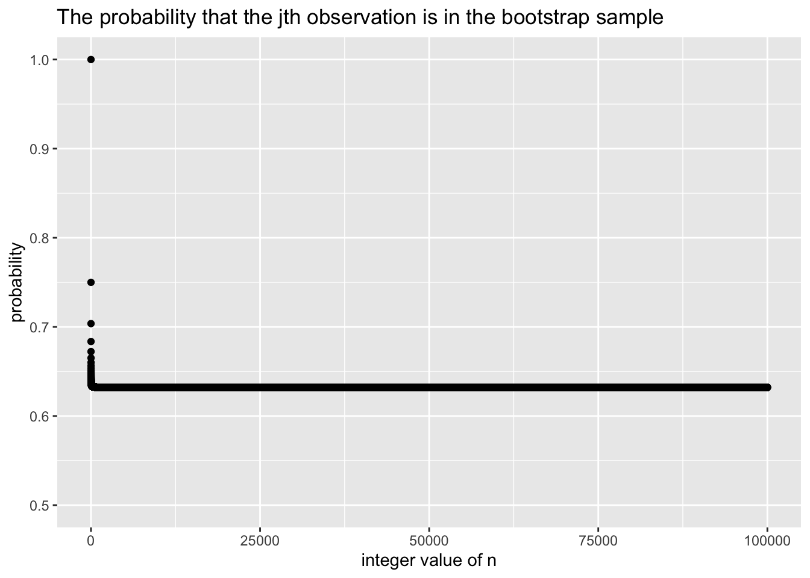

We will now derive the probability that a given observation is part of a bootstrap sample. Suppose that we obtain a bootstrap sample from a set of n observations.
(a) What is the probability that the first bootstrap observation is not the jth observation from the original sample? Justify your answer.
Since the bootstrap sample is a replacement of original dataset, the probability of selecting one specific observation is \(\frac{1}{n}\) , and the probability of not selecting one specific observation (\(j_{th}\)) is \(1-\frac{1}{n}=\frac{n-1}{n}\).
(b) What is the probability that the second bootstrap observation is not the jth observation from the original sample?
\({(1-\frac{1}{n})}\). The result remains because the bootstrap sample is a replacement of original dataset, and each of the replacement is independent, so the probability remains.
(c) Argue that the probability that the jth observation is not in the bootstrap sample is \((1 − 1/n)^n\).
For n observations in the bootstrap sample, the probability that each one isn’t the \(j_{th}\) in that set is \((1 − 1/n)\), so the probability is \((1 − 1/n)^n\).
(d) When n = 5, what is the probability that the jth observation is in the bootstrap sample?
(g) Create a plot that displays, for each integer value of n from 1 to 100,000, the probability that the jth observation is in the bootstrap sample. Comment on what you observe.
We can use ggplot() to construct the plot：
library(ggplot2)X=c(1:100000)Y=1-(1-1/X)^Xdf<-data.frame(X,Y)ggplot(df, aes(x = X, y = Y)) +geom_point()+labs(x="integer value of n",y="probability",title="The probability that the jth observation is in the bootstrap sample" )+ylim(0.5,1)

According to the plot, we can see the probability soon converge to a number between 0.6 and 0.65 with the increasing of n.
(h) We will now investigate numerically the probability that a bootstrap sample of size n = 100 contains the jth observation. Here j = 4. We repeatedly create bootstrap samples, and each time we record whether or not the fourth observation is contained in the bootstrap sample.
As we can see, the standard error is very closer to the estimate standard error in (b).
(d) Based on your bootstrap estimate from (c), provide a 95 % confidence interval for the mean of medv. Compare it to the results obtained using t.test(Boston$medv).
Hint: You can approximate a 95 % confidence interval using the formula \([\hat \mu-2SE(\hat \mu),\hat \mu+2SE(\hat \mu)]\).
# t test resultst_results<-t.test(Boston$medv)t_results$conf.int[1:2]
The confidence intervals results are almost the same.
(e) Based on this data set, provide an estimate, \(\hat \mu_{med}\), for the median value of medv in the population.
We use median() to get the sample median, as the estimation of the median value of medv in the population.
mu_hat_med<-median(Boston$medv)mu_hat_med
[1] 21.2
(f) We now would like to estimate the standard error of \(\hat \mu_{med}\). Unfortunately, there is no simple formula for computing the standard error of the median. Instead, estimate the standard error of the median using the bootstrap. Comment on your findings.
The calculation is the same as (c), we just need to replace the statistical function mean() with median().
As we can see, the std.error is 0.3813532. The estimate median is 21.2(median(boot_results1$t)), which is same as the results in (e), and the small bias shows the reliability of this method.
(g) Based on this data set, provide an estimate for the tenth percentile of medv in Boston census tracts. Call this quantity \(\hat \mu_{0.1}\). (You can use the quantile() function.)
Use the quantile() to estimate the tenth percentile of medv:
quantile(Boston$medv,0.1)
10%
12.75
(h) Use the bootstrap to estimate the standard error of \(\hat \mu_{0.1}\). Comment on your findings.
As we can see, the std.error is 0.5030691. The estimate 10th percentile is 11.95(median(boot_results1$t)), which is slightly different to 12.75. The small bias shows the reliability of this method.
Least squares is MLE (10pts)
Show that in the case of linear model with Gaussian errors, maximum likelihood and least squares are the same thing, and \(C_p\) and AIC are equivalent.
Let’s assume the model is
\[
Y=X\beta +\epsilon,
\]
where \(Y\) is the vector of observed responses, \(X\) is the design matrix, \(\beta\) is the vector of unknown coefficients, \(\epsilon\) is the vector of Gaussian errors.
where \(\sigma^2\) stands for the variance of errors.
Finding the maximum likelihood is equal to find the maximum \(L(\beta|Y,X)\), which is equal to find the minimum of the following part:
\[
(Y-X\beta)^\top(Y-X\beta).
\]
And that’s exactly the objective function of least squares method. Thus, maximum likelihood and least squares are the same thing for this situation.
\(C_p\) and AIC can be expressed as following equations:
\[
C_p=\frac{1}{n}(RSS+2d\hat\sigma^2)
\]
\[
AIC=2k-2log(L)
\]
In the case of linear regression with Gaussian errors, the likelihood function \(L\) is proportional to \(e^{-\frac{1}{2}\log(RSS)}\), which means AIC is proportional to \(RSS+2k\).
\(k\) in AIC includes the intercept term, whereas in \(C_p\), \(d\) only includes the number of predictors. \(2k+RSS\) in AIC accounts for the penalty for the number of parameters. So \(C_p\) actually is equivalent to \(AIC\), only different in a constant factor.
ISL Exercise 6.6.1 (10pts)
We perform best subset, forward stepwise, and backward stepwise selection on a single data set. For each approach, we obtain p + 1 models, containing 0, 1, 2, ……, p predictors. Explain your answers:
(a) Which of the three models with k predictors has the smallest training RSS?
Best subset selection model has the smallest training RSS.
That’s because it is the one selected among all k-predictor-models. In forward stepwise selection, it’s selected from \(p-k\) models, while in backwards stepwise, it is selected from \(k\) models.
(b) Which of the three models with k predictors has the smallest test RSS?
It can’t be determined answer. The best subset selection have higher probability to have the smallest testing RSS since it considered more models, but when the \(p\) is relatively large, best subset selection tends to have overfitting problem. Besides, the other 2 selection may simply chose one model that has smaller testing RSS.
(c) True or False:
The predictors in the k-variable model identified by forward stepwise are a subset of the predictors in the (k+1)-variable model identified by forward stepwise selection.
True.
The predictors in the k-variable model identified by backward stepwise are a subset of the predictors in the (k + 1)- variable model identified by backward stepwise selection.
True.
The predictors in the k-variable model identified by backward stepwise are a subset of the predictors in the (k + 1)- variable model identified by forward stepwise selection.
False.
The predictors in the k-variable model identified by forward stepwise are a subset of the predictors in the (k+1)-variable model identified by backward stepwise selection.
False.
The predictors in the k-variable model identified by best subset are a subset of the predictors in the (k + 1)-variable model identified by best subset selection.
False.
ISL Exercise 6.6.3 (10pts)
Suppose we estimate the regression coefficients in a linear regression model by minimizing
\[
\sum_{i=1}^{n}(y_i-\beta_0-\sum_{j=1}^{p}\beta_jx_{ij})^2 \\subject\ to \sum_{j=1}^{p}|\beta_j|\le s
\]
for a particular value of s. For parts (a) through (e), indicate which of i. through v. is correct. Justify your answer.
(a) As we increase s from 0, the training RSS will:
Increase initially, and then eventually start decreasing in an inverted U shape.
Decrease initially, and then eventually start increasing in a U shape.
Steadily increase.
Steadily decrease.
Remain constant.
iv., because with the increase of \(s\), the restriction to \(\beta_j\) is getting less. That allows the flexibility of the model increasing, leading to the decrease of training RSS.
(b) Repeat (a) for test RSS.
ii., The first decrease is caused by the increase of model flexibility. Then with a more higher \(s\), there will be overfitting problem, the model will be too fit the training data, causing testing RSS increase.
(c) Repeat (a) for variance.
iii., the increase of \(s\) causes the increase of model flexibility. It will lead to the increase of variance.
(d) Repeat (a) for (squared) bias.
iv., the increase of \(s\) causes the increase of model flexibility. It will lead to the decrease of bias.
(e) Repeat (a) for the irreducible error.
v., the irreducible error is independant to the model, won’t be affected by the increase of \(s\).
ISL Exercise 6.6.4 (10pts)
Suppose we estimate the regression coefficients in a linear regression model by minimizing
for a particular value of \(\lambda\). For parts (a) through (e), indicate which of i. through v. is correct. Justify your answer.
(a) As we increase \(\lambda\) from 0, the training RSS will:
Increase initially, and then eventually start decreasing in an inverted U shape.
Decrease initially, and then eventually start increasing in a U shape.
Steadily increase.
Steadily decrease.
Remain constant.
iii., because with the increase of \(\lambda\), the restriction to \(\beta_j\) is getting more (greater panalty). That makes the flexibility of the model decreasing, leading to the increase of training RSS.
(b) Repeat (a) for test RSS.
ii., The first decrease is caused by the decrease of model complexity, causing the model less likely to meet overfitting problem. But when the model become too simple as the result of high \(\lambda\), the model will be inapplicable to find the pattern of the data, causing the increase of testing RSS.
(c) Repeat (a) for variance.
iv., the increase of \(\lambda\) causes the decrease of model flexibility. It will lead to the decrease of variance.
(d) Repeat (a) for (squared) bias.
iii., the increase of \(\lambda\) causes the decrease of model flexibility. It will lead to the increase of bias.
(e) Repeat (a) for the irreducible error.
v., the irreducible error is independant to the model, won’t be affected by the increase of \(\lambda\).
ISL Exercise 6.6.5 (10pts)
It is well-known that ridge regression tends to give similar coefficient values to correlated variables, whereas the lasso may give different coefficient values to correlated variables. We will now explore this property in a very simple setting.
Suppose that \(n\) = 2, \(p\) = 2, \(x_{11}\) = \(x_{12}\), \(x_{21}\) = \(x_{22}\). Furthermore, suppose that \(y_1+y_2= 0\) and \(x_{11}+x_{21} = 0\) and \(x_{12}+x_{22} = 0\) , so that the estimate for the intercept in a least squares, ridge regression, or lasso model is zero: \(\hat\beta_0 = 0\).
(a) Write out the ridge regression optimization problem in this setting.
We use \(x_1\) to express \(x_{11}\) and \(x_{12}\), use \(x_2\) to express \(x_{21}\) and \(x_{22}\),
(d) Argue that in this setting, the lasso coefficients \(\hat\beta_1\) and \(\hat\beta_2\)are not unique——in other words, there are many possible solutions to the optimization problem in (c). Describe these solutions.
We can apply the same calculation in (b), the absolute value’s derivative is
So, \(\hat\beta_1\) and \(\hat\beta_2\) should have the same positivity (all greater than 0 or all less than 0).
ISL Exercise 6.6.11 (30pts)
We will now try to predict per capita crime rate in the Boston dataset.
Method
CV RMSE
Test RMSE
LS
not applicable
11.63132
Ridge
21.53136
11.68697
Lasso
21.71989
11.63515
(a) Try out some of the regression methods explored in this chapter, such as best subset selection, the lasso, ridge regression, and PCR. Present and discuss results for the approaches that you consider.
We are going to use 3 methods: least squares, lasso, and ridge.
As we can see, the indus, nox, rad, tax, lstat seems have relatively high relation with crim.
So, for each method, we try 3 models: crim ~ rad; crim~[indus, nox, rad, tax, lstat], crim~. .
The 1~400 rows as training data, 401~500 rows as testing data.
LS:
library(tidymodels)Boston_train<-Boston[1:400,]Boston_test<-Boston[401:500,]# Creating a recipe for data preprocessingnorm_recipe <-recipe( crim ~ indus + nox + rad + tax + lstat, data = Boston_train ) %>%step_dummy(all_nominal()) %>%step_zv(all_predictors()) %>%step_normalize(all_predictors()) %>%prep(training = Boston_train, retain =TRUE)norm_recipe# Using ordinary Least Squareslm_mod <-linear_reg(penalty =0) %>%# Specifying penalty as 0 means no penalty is appliedset_engine("lm") # Setting the engine to ordinary Least Squares# Creating a workflowlm_wf <-workflow() %>%add_model(lm_mod) %>%add_recipe(norm_recipe)lm_wf
══ Workflow ════════════════════════════════════════════════════════════════════
Preprocessor: Recipe
Model: linear_reg()
── Preprocessor ────────────────────────────────────────────────────────────────
3 Recipe Steps
• step_dummy()
• step_zv()
• step_normalize()
── Model ───────────────────────────────────────────────────────────────────────
Linear Regression Model Specification (regression)
Main Arguments:
penalty = 0
Computational engine: lm
# Fitting the modelfit_lm <- lm_wf %>%fit(data = Boston_train)# Extracting the resultscoefficients <- broom::tidy(fit_lm$fit$fit)# Plotting the coefficient estimateslibrary(ggplot2)ggplot(coefficients, aes(x = term, y = estimate)) +geom_bar(stat ="identity") +labs(x ="Predictors",y ="Coefficient Estimates",title ="Coefficient Estimates from Ordinary Least Squares" ) +theme(axis.text.x =element_text(angle =45, hjust =1))
Then we obtained the best \(\lambda\), as well as the CV MSE.
(b) Propose a model (or set of models) that seem to perform well on this data set, and justify your answer. Make sure that you are evaluating model performance using validation set error, crossvalidation, or some other reasonable alternative, as opposed to using training error.